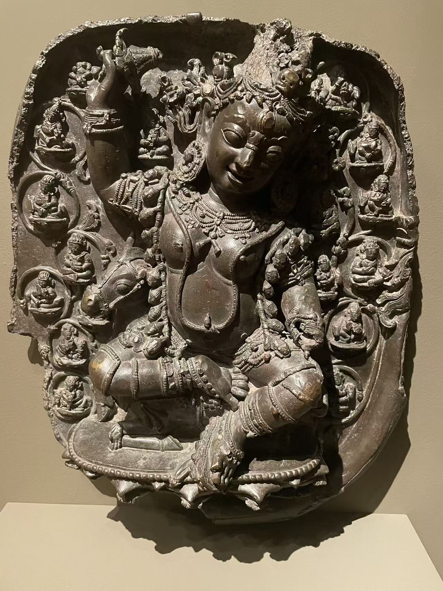
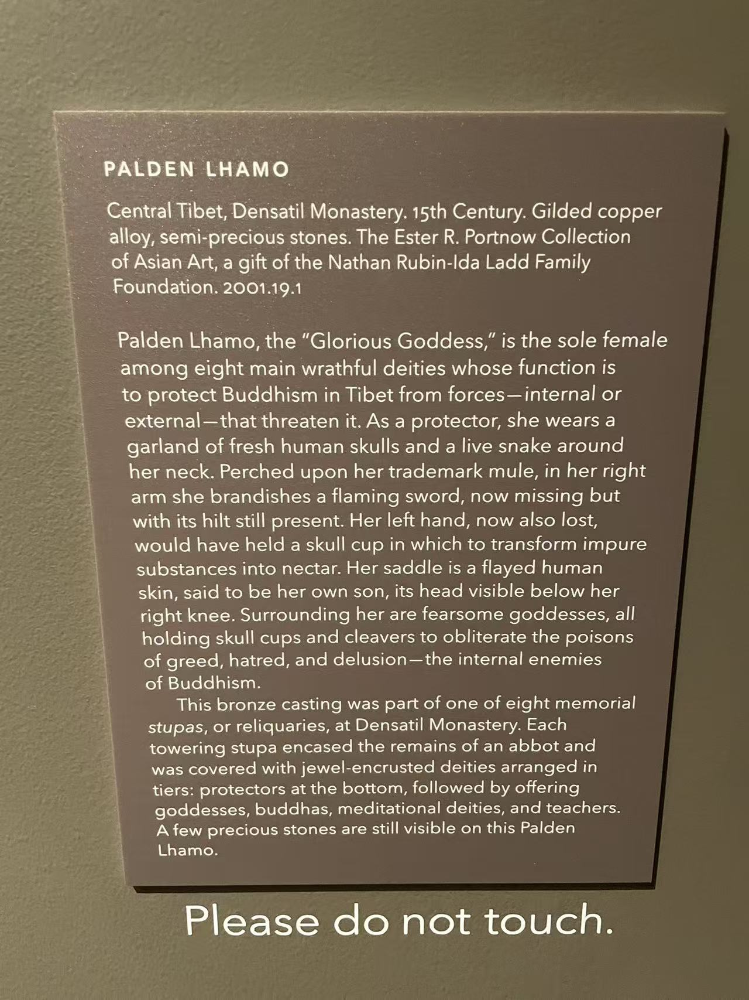

现场展签 ＋


01 / DENSATIL
吉祥天母
Palden Lhamo
- 收藏
- 埃默里大学迈克尔·C·卡洛斯博物馆
- 编号
- 2001.019.001（现场展签：2001.19.1）
- 年代
- 15世纪（馆方）
- 材料
- 鎏金铜合金，嵌半宝石
- 尺寸
- 高51 × 宽42厘米
馆方称其原为丹萨替寺八座纪念性舍利塔之一的构件。
主尊斜坐在骡背上，举起的右手尚留持物残部，左手及原有器物已失。冠饰、耳珰和项链仍可细辨，背板边缘则留下不规则断口。环绕她的小尊像各有自己的莲茎与位置：这不是一块只为主尊衬底的平板，而是把主尊与眷属组织在一起的造像构件。
馆方将她识别为护法吉祥天母，并明确联系到丹萨替的纪念性舍利塔。Estournel在图156中采用更细的尊名Saptadaśaśīrsī Śrīdevī，将此件归入约1386年的第四座大型吉祥多门塔、由上数第六层的北侧。这是其风格与图像体系重建中的判断，区别于馆方的15世纪断代。
公开记录从1997年纽约苏富比第116号拍品接续到2001年：基金会代表从纽约Kapoor Galleries为博物馆购入，作为Ester R. Portnow亚洲艺术收藏的捐赠入藏。它离开西藏至拍卖出现之间的经历，馆方没有给出完整链条。
卡洛斯博物馆：Palden Lhamo，2001.019.001 ↗ · Jean-Luc Estournel：十八座舍利塔及散藏造像研究 ↗ · Estournel 图156：卡洛斯吉祥天母，约1386年归属 ↗
馆藏编号的两种写法指同一件作品。研究图156断代约1386年，馆方仍列15世纪。
原位与归属依据 ↓